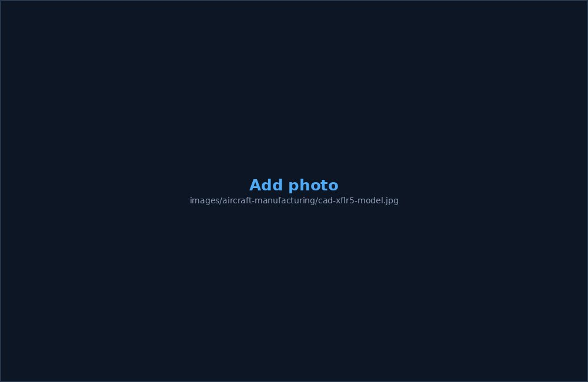

A 1:14 scale plywood model of the Piper PA-38 Tomahawk, designed, analyzed, and hand-built for a sixth-semester Aircraft Manufacturing course, with flyability confirmed through simulation.
Objective
- Scale the Piper PA-38 Tomahawk down to 1:14 while preserving its aerodynamic, structural, and propulsion characteristics
- Carry the design through to a fully fabricated, assembled model, meeting the course's hands-on manufacturing requirement
Approach
- Scaled every dimension of the full-size Tomahawk by 1:14, keeping the aspect ratio constant at 9.33
- Selected the NASA GAW-1 airfoil and a ~5° dihedral for roll stability, then calculated wing loading and CG placement (25–30% of the mean aerodynamic chord)
- Reinforced the T-tail mount to handle the added stress from the stabilizer's high position
- Validated aerodynamics and stability in XFLR5, then checked flyability in X-Plane across phugoid, short-period, dutch roll, roll-damping, and spiral modes
- Modeled the parts in CATIA, generated laser-cutting files in RDWorks, and laser-cut the plywood ribs, frames, spars, longerons, tail, and propeller in three batches at IOE Pulchowk's manufacturing lab
- Hand-assembled the cut parts using Vega glue

Key Results
- Wing loading came out to ~6.79 kg/m² at a 400 g model weight — within the appropriate range for a small-scale aircraft
- X-Plane simulation across all flight modes confirmed the design was flyable
- The finished 1:14 prototype successfully replicated the full-scale aircraft's structural properties and was fully fabricated